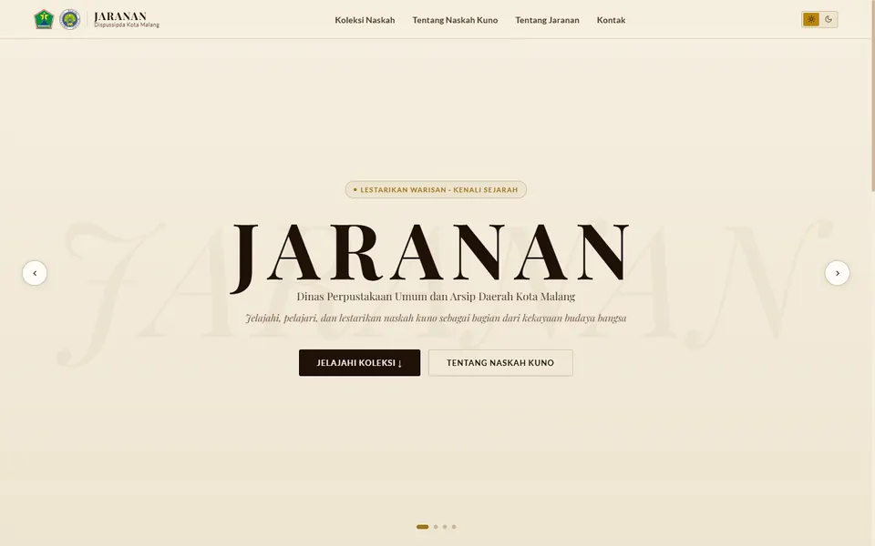

Live
01
JARANAN
Repositori naskah kuno untuk Dispussipda Kota Malang: pencarian, pengelolaan, dan preservasi koleksi secara digital.
An ancient-manuscript repository for Dispussipda Malang: search, management, and digital preservation.
ReactSupabaseVercelInstitusiGovernment
Lihat situs JARANANVisit JARANAN ↗